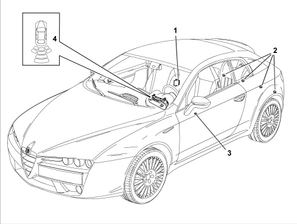
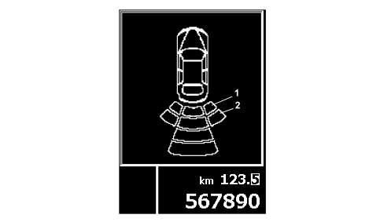
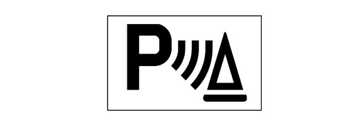
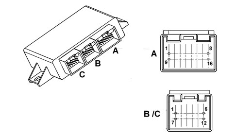
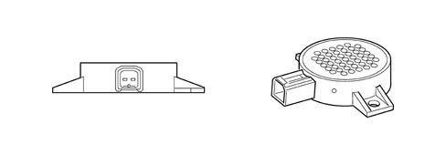

5580H PARKING OBSTACLE DETECTION DEVICE
- Path
- Descriptions > 55 ELECTRICAL EQUIPMENT > 5580 SPECIAL ACCESSORIES > 5580H PARKING OBSTACLE DETECTION DEVICE
- Kind
- system description
- Applies to
- all engines; all production periods
- Interactive page
- https://sloeber94.github.io/elrnDB-aBrrSpdr/en/#/946001242
Applies to: all engines; all production periods
INTRODUCTION
The "Parking Assistance" system supplies the driver with information on distance when approaching obstacles behind the vehicle thereby providing help with parking manoeuvres and identifying obstacles that are outside the field of vision.
The information concerning the presence or distance of the obstacle is transmitted to the driver by means of acoustic and visual signals.
- the frequency of the acoustic impulse warnings depends on the distance of the obstacle from the rear bumper.
- the display in the instrument panel shows the areas around the vehicle which start flashing if the system detects that the vehicle is getting close to an obstacle.
The distance measurement only takes place when the system is activated, whilst only the control unit is operational in the inactive state.
The parking assistance system comprises the following components:

1 - electronic control unit
2 - ultrasound sensors located in the rear bumper
3 - speaker (buzzer)
4 - instrument panel display
OPERATION
Activation and deactivation of the system
The system is activated if the following conditions are present simultaneously:
- Key ON
- Reverse gear engaged
When the system is activated the buzzer sounds as a warning.
The system is deactivated by disengaging reverse gear.
Obstacle distance acoustic signals
The control unit processes the information supplied by the sensors, operating the buzzer to signal the presence of any obstacles.
The sound from the buzzer warns the driver that the vehicle is approaching an obstacle. The sound lasts for 75 ms, whilst the pause between the sounds is directly proportional to the distance of the obstacle: impulses in quick succession indicate the presence of an obstacle that is very close. A continuous sound indicates that the obstacle is less than 30 cm away.
The acoustic signal stops immediately if the distance of the obstacle increases. The sound cycle remains constant if the distance measured by the centre sensors remains unchanged, whilst if this situation occurs for the side sensors, the signal is interrupted after 3 seconds (for example, to prevent signals in the case of manoeuvres alongside walls).
Obstacle distance visual signals
The control unit processes information supplied by sensors, sending the information to the instrument panel for signalling the presence of any obstacles.
The instrument panel display with the system activated shows the various areas around the vehicle.
The various areas in the different cases are either off, flashing or on constantly in accordance with the following logic (SEE DIAGRAM):

example:
- obstacle in the right rear area (sectors 1 and 2)
- obstacle still far away: sectors 1 and 2 both off
- the obstacle is getting closer: sector 2 is flashing, sector 1 remains switched off
- the obstacle is getting even closer: sector 1 is on constantly, sector 2 goes out; the situation is similar for the other sectors.
In the case of large obstacles (e.g. walls) one and only one sector is lit up at a time.
Autodiagnosis and recovery
The control unit carries out an autodiagnostic test when it is switched on. The sensors are diagnosed every time they are activated. A fault even in only one sensor inhibits the operation of the entire system which is deactivated.
The errors detected by the control unit can be read via the CAN using suitable diagnostic equipment (Examiner).
Error signalling
Any faults/errors are signalled in the instrument panel by the relevant warning light coming on and the message "PARKING ASSISTANCE NOT AVAILABLE" in the display.

COMPONENT SPECIFICATIONS
Parking sensor control unit (cpa)
The control unit is an electronic component connected to the rear wiring that manages the assistance function by carrying out the following functions:
- receiving the button activation/deactivation signals via the CAN and directly
- activating the sensors
- processing the signals received by the sensors
- checking the operation of the sensors
- operating the buzzer
- managing the fault diagnosis and test functions
The electronic control unit has a device that protects against voltage fluctuations and short circuits.
It is located in the luggage compartment, on the right rear side panel; it is connected with three connectors (one not used on this version):
- CONNECTOR A (rear wiring) control unit power supply and signals from other nodes or vehicle components;
- CONNECTOR B (not used);
- CONNECTOR C (rear wiring) rear bumper sensors power supply.

Control unit pin out
CONNECTOR A
Pin | Signal |
|---|---|
1 | Ignition-operated power supply |
2 | Rear buzzer signal (-) |
3 | n.c. |
4 | Parking system activation/deactivation button |
5 | Trailer control unit signal (N.C.) |
6 | n.c. |
7 | B-CAN A |
8 | Earth |
9 | n.c. |
10 | Rear buzzer (+) |
11 | n.c. |
12 | n.c. |
13 | Parking system activation/deactivation LED |
14 | B-CAN B |
15 | n.c. |
16 | n.c. |
CONNECTOR C
Pin | Signal |
|---|---|
1 | Rear sensor earth |
2 | Right inner rear sensor signal |
3 | Left inner rear sensor signal |
4 | Right outer rear sensor signal |
5 | Left outer rear sensor signal |
6 | Rear sensor power supply |
7 | n.c. |
8 | n.c. |
9 | n.c. |
10 | n.c. |
11 | n.c. |
12 | n.c. |
Ultrasound sensors
The sensor is an ultrasound transducer which acts as an intelligent transmitter and receiver of ultrasound impulse packages. Both the frequency and the voltage of the impulses are produced in the transducer.
The impulses emitted are reflected by any obstacles; the transducer therefore receives an echo which is amplified and converted into a digital signal, sent to the electronic control unit via the same line used for the transmission request.
Each sensor can also be operated as a receiver only, in order to be able to take a triangular measurement between two sensors.
This technique allows better detection of small obstacles and in situations featuring critical reflection.
The sensors all have the same electrical and mechanical properties; the maximum detection distance for each sensor can be adjusted using software according to the location of the actual sensor.

Sensor pin out
Pin | Signal |
|---|---|
1 | Sensor power supply |
2 | Sensor signal |
3 | Sensor earth |
Buzzer
A buzzer, located under the console between the two front seats, notifies the driver of the following information:
- activation of the system;
- distance of the obstacle;
- a possible fault in the system.
The frequency and the volume of the signalling can be controlled by the control unit.
